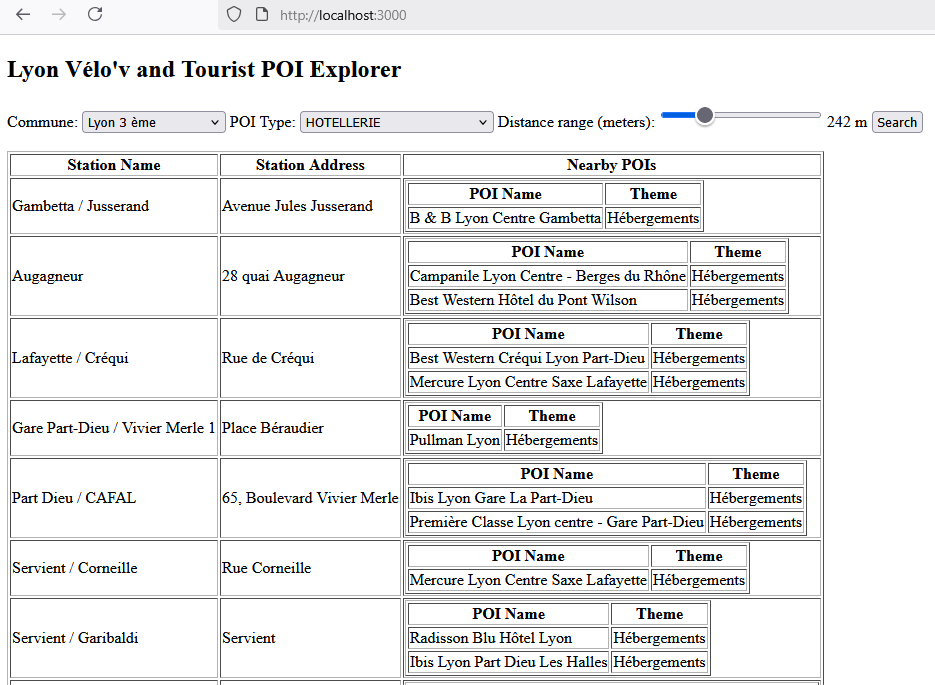

3IFA Graded Lab statement
Instructions
Read the statement carefully!
The purpose of this lab is to evaluate the notions seen during the
lectures, exercises and the lab sessions of the Data for the Web module.
For this purpose you will use Firefox as a browser, MongoDB
as the database management system, NodeJS and Express
as backend technology and framework.
Use a code editor (not a text processor like MS Word, LibreOffice,
Google Docs) to edit your code. Some examples : VSCode, NotePad++,
NetBeans, Eclipse, vi, ...
This exercise lasts 2 hours.
For the report, you will create a file named NAME1_NAME2_TPDW.zip (replace NAME1 and NAME2 with your names ) in which you will put:
- A "main" text, markdown or html document named "CR_TP.txt" (or "CR_TP.md" or "CR_TP.html") containing your commented answers (Number the answers and copy their statements). Start the report text/html file with your names and student numbers
- A directory called webApp with the necessary files for your web application as explained below.
You will have to upload your report before 18h00 today on Moodle!
The respect of the instructions is worth 3 points.
We suppose that you have a MongoDB server running, a MongoDB client
and the mongoimport tool installed on your computer. If
not, please refer to the MongoDB exercise statement to install them.
Here is the onlylyon-tourisme-et-congres_apd_apidae.apdlieutourisme_latest.json
file with the data you will work on. Download (mouse right button : save
link target as) and import it in your MongoDB server to
the touristPOI_c collection in the 20263IFMongoLab
database.
Make sure also that you have the velov2026 collection
from the training lab as well in the same database.
Explore the data!
Questions
- 1.1 Simplify the
touristPOI_ccollection, getting the documents from inside the "features" array to the root of a new collection calledtouristPOI. Provide the MongoDB query and explain your approach.
From now on, you will work with the touristPOI
collection.
- 1.2 Provide a mongodb query that retrieves the unique types
(distinct types) of points of interest in the
touristPOIcollection. Provide the results as well.
- 1.3 What are the possible themes for each type of point of interest
in the
touristPOIcollection? List the distinct themes for each type, and sort the results by the descending order of the count of themes per type. Explain your approach, provide the query, and the first 5 results. - 2 Provide at least 3 MongoDB queries that combine the
touristPOIcollection with the velov_geo collection using the$lookupoperator:
- 2.1 first query that involves address comparison (properties.address, properties.nom, … check the fields)
- 2.2 second query that implies geographic coordinate comparison. Use geographic operators. Create indexes if necessary.
- 2.3 for the additional query use your imagination
For the following questions: provide the list of libraries used and the
files you created for the web application (typically: server.js,
data.js, index.html, ...Don't include the node_modules
directory!). We will create a nodeJS webapp, install the
libraries and run your server. Provide a short setup guide. We will also
have a MongoDB server running with the touristPOI and the
velov2026collections in the 20263IFMongoLab
database.
- 3.1 Create a web application using NodeJS and Express that connects to MongoDB and retrieves the unique communes of velov stations and integrates them in a dropdown list on an html page.
- 3.2 Modify the application so that the web page contains two drop
down lists initialized with the unique communes and unique POI types
and contains a search button that calls a NodeJS/Expess route that
takes as parameters the commune of velov stations, the type of a POI
and returns the velov station names and address of the given commune
and the POI-s with the given type within a range of 500m from each
velov station. Return only velov stations with at least one
corresponding POI. You shall render in a table the names and addresses
of velov_stations, and the corresponding POI names and themes. The
table contains one raw per velov station and an embedded table for the
corresponding POI-s in a cell.
Divide the problem in substeps and create the solution step by step.
An illustration of the result is shown in the following picture:
- 3.3 Modify the application : add a slider next to the dropdown lists in the html page with values from 0 to 1000 to select the distance range in meters from the velov stations and modify the route and html page to take this distance range in account when searching the nearbyPOI-s, instead of a constant 500m.
- 3.4 Propose an interesting visualization of the POI dataset eventually combined with the velov stations. Explain your idea and provide the description of your solution